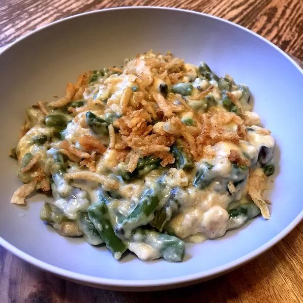

I was on a search for a slow cooker green bean casserole to take to a friend's house for Thanksgiving dinner. I couldn't find one I liked, so I mixed and matched and came up with this one! It was so good that I didn't have any leftovers. Happily fed 8 adults and 3 children. Use different spices for your taste! I added some onion powder and Italian seasonings. After you serve, leave the lid off of the slow cooker so the french-fried onions remaining crispy on top. You could also use cream of mushroom soup in place of the cream of chicken.